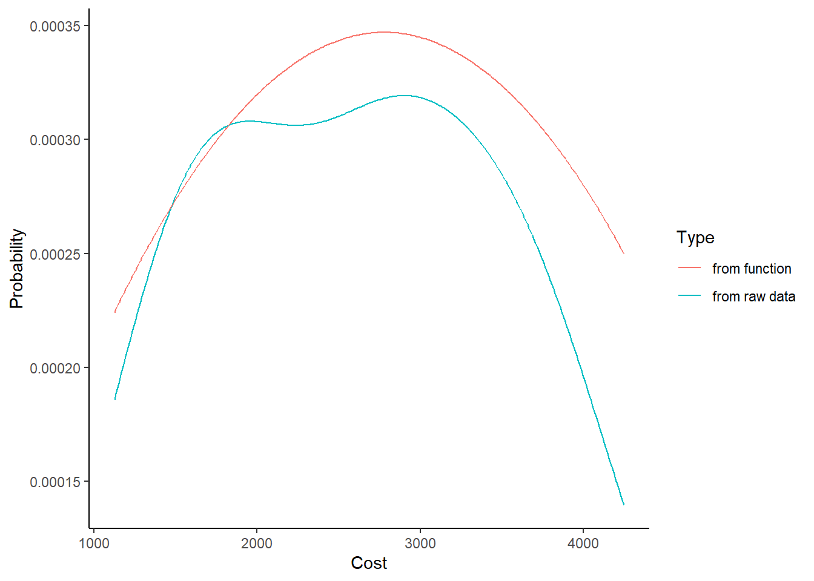

11 Probability Functions in R
Getting Started
Please open up your Posit.Cloud project. Start a new R script (File >> New >> R Script). Save a new R script. And let’s get started!
11.1 Probability Functions
How do we use probability in our statistical analyses of risk, performance, and other systems engineering concepts?
Probability allows us to measure for any statistic (or parameter) mu, how extreme is that statistic? This is called type II error, measured by a p-value, the probability that a more extreme value occurred than our statistic. It’s an extremely helpful benchmark. In order to evaluate how extreme it is, we need values to compare it to. We can do this by:
- assuming the probability function of an unobserved, hypothetical distribution, or;
- making a probability function curve of the observed distribution.
11.2 Hypothetical Probability Functions
Often, our sample of data is just one of the many samples we could have possibly gotten. For example, say we are examining customer behavior at storefronts. Had we looked at a different firm location (by chance), or a different sample of customers come in by chance, we might have gotten slightly different distribution of purchase value made by these customers.
The problem is, we almost never can see the distribution of the true population of all observations (eg. all purchases). But, if we can approximately guess what type of distribution that population has, we can very easily compute the probability density functions and cumulative distribution functions of several of the most well known distributions in R (eg. Normal, Poisson, Gamma, etc.)
Example: Farmers Market
The Ithaca Farmers Market is a vendor-owned cooperative that runs a massive Saturday-and-Sunday morning market for local produce, street food, and hand-made goods, on the waterfront of Cayuga Lake. In markets and street fairs, some stalls’ brands are often better known than others, so businesses new to the market might worry that people won’t come to their stalls without specific prompting. This past Saturday, a volunteer tracked 500 customers and recorded how many stalls each customers visited during their stay. They calculated the following statistics.
- The average customer visited a
meanof5.5stalls and amedianof5stalls, with a standard deviation of2.5stalls.
](https://i0.wp.com/ithacamarket.com/wp-content/uploads/2019/04/IMG_3407-900px.jpg?w=900&ssl=1)
Figure 11.1: Ithaca Farmers Market!
Market operators wants to know:
What’s the probability that customers will stop by 5 stalls?
What’s the probability that customers will stop by at max 5 stalls?
What’s the probability that customers will stop by over 5 stalls?
How many visits did people usually make? Estimate the interquartile range (25th-75th percentiles).
Unfortunately, the wind blew the raw data away into Cayuga Lake before they could finish their analysis. How can we approximate the unobserved distribution of visits and compute these probabilities?
Below, we will (1) use these statistics to guess which of several possible archetypal hypothetical distributions it most resembles, and then (2) compute probabilities based off of the shape of that hypothetical distribution.
Unobserved Distributions
We don’t have the actual data, but we know several basic features of our distribution!
Our variable is
visits, a count ranging from 0 to infinity. (Can’t have -5 visits, can’t have 1.3 visits.)The median (
5) is less than the mean (5.5), so our distribution is right-skewed.
This sounds like a classic Poisson distribution! Let’s simulate some poisson-distributed data to demonstrate.
# Randomly sample 500 visits from a poisson distribution with a mean of 5.5
visits <- rpois(n = 500, lambda = 5.5)
# Check out the distribution!
visits %>% hist()
Using Hypothetical Probability Functions
Much like rpois() randomly generates poisson distributed values, dpois(), ppois(), and qpois() can help you get other quantities of interest from the Poisson distribution.
dpois()generates the density of any value on a poisson distribution centered on a given mean (PDF).ppois()returns for any percentile in the distribution the cumulative probability (percentage of the area under the density curve) up until that point (CDF).qpois()returns for any percentile in the distribution the raw value.
See the Table below for several examples.
| Meaning | Purpose | Main Input | Normal | Poisson | Gamma | Exponential |
|---|---|---|---|---|---|---|
| Random Draws from Distribution | Simulate a distribution | n = # of simulations | rnorm() | rpois() | rgamma() | rexp() |
| Probability Density Function | Get Probability of Value in Distribution | x = value in distribution | dnorm() | dpois() | dgamma() | dexp() |
| Cumulative Distribution Function | Get % of Distribution LESS than Value | q = a cumulative probability | pnorm() | ppois() | pgamma() | pexp() |
| Quantiles Function | Get Value of any Percentile in Distribution | p = percentile | qnorm() | qpois() | qgamma() | qexp() |
11.2.1 Density (PDF)
So, what percentage of customers stopped by 1 stall?
Below, dpois() tells us the density() or frequency of your value, given a distribution where the mean = 5.5.
## [1] 0.1714007Looks like 17.1% of customers stopped by 5 stalls.
[Optional] Validate This!
We can validate this using our simulated visits from above, if we use methods for Observed Probabilities, which we learn later in this tutorial.
We can calculate the density() function, extract it using approxfun(), and then assign it to dsim(), our own exact probability density function for our data. It works just like dpois(), but you don’t need to specify lambda, because it only works for this exact distribution!
# Approximate the PDF of our simulated visits
dsim <- visits %>% density() %>% approxfun()
# Try our density function for our simulated data!
dsim(5)## [1] 0.1572401
11.2.2 Cumulative Probabilities (CDF)
What percentage of customers stopped by at max 5 stalls?
# Get the cumulative frequency for a value (5) in the distribution
cd5 <- ppois(q = 5, lambda = 5.5)
# Check it!
cd5## [1] 0.5289187Looks like just 52.9% of customers stopped by 1 stall or fewer.
What percentage of customers stopped by over 5 stalls?
## [1] 0.4710813[Optional] Validate This!
We can validate this using our simulated visits from above, if we use methods for Observed Probabilities, which we learn later in this tutorial.
We can validate our results against our simulated distribution.
psim <- visits %>% density() %>% tidy() %>%
# Get cumulative probability distribution
arrange(x) %>%
# Get cumulative probabilities
mutate(y = cumsum(y) / sum(y)) %>%
# Turn it into a literal function!
approxfun()
# Check it!
psim(5)## [1] 0.4506184
11.2.3 Quantiles
How many visits did people usually make? Estimate the interquartile range (25th-75th percentiles) of the unobserved distribution.
## [1] 4 7Looks like 50% of folks visited between 4 and 7 stalls
[Optional] Validate this!
We can validate this using our simulated visits from above, if we use methods for Observed Probabilities, which we learn later in this tutorial.
We can compare against our simulated data using quantile().
# Approximate the quantile function of this distribution
qsim <- tibble(
# Get a vector of percentiles from 0 to 1, in units of 0.001
x = seq(0, 1, by = 0.001),
# Using our simulated distribution,
# get the quantiles (values) at those points from this distribution
y = visits %>% quantile(probs = x)) %>%
# Approximate function!
approxfun()
# Check it!
qsim(c(.25, .75))## [1] 4 7
Learning Check 1
Question
What if we are not certain whether our unobserved vector of visits has a Poisson distribution or not? To give you more practice, please calculate the probability that customers will stop at more than 5 stalls, using appropriate functions for the (1) Normal, (2) Gamma, and (3) Exponential distribution! (See our table above for the list of function names.)
[View Answer!]
We know there were n = 500 customers, with a mean of 5.5 visits, a median of 5 visits, and a standard deviation of 2.5 visits.
For a Normal Distribution:
We learned in Workshop 2 that rnorm() requires a mean and sd (standard deviation); we conveniently have both!
## [1] 0.5792597For a Gamma Distribution:
We learned in Workshop 2 that rgamma() requires a shape and scale (or rate); we can calculate these from the mean and sd (standard deviation).
# shape = mean^2 / variance = mean^2 / sd^2
shape <- 5.5^2 / 2.5^2
# scale = variance / mean
scale <- 2.5^2 / 5.5
# AND
# rate = 1 / scale
rate <- 1 / scale
# So...
# Get 1 - cumulative probability up to 5
1 - pgamma(5, shape = shape, scale = scale)## [1] 0.5211581## [1] 0.5211581For an Exponential Distribution:
We learned in Workshop 2 that rexp() requires a rate; we can calculate this from the mean.
# For exponential distribution,
# rate = 1 / mean
rate <- 1 / 5.5
# So...
# Get 1 - cumulative probability up to 5
1 - pexp(5, rate = rate)## [1] 0.402890311.3 Observed Probability Functions
11.3.1 Example: Observed Distributions

(#fig:img_er)Figure 1. Your Local ER
For example, a local hospital wants to make their health care services more affordable, given the surge in inflation.
They measured
n = 15patients who stayed 1 night over the last 7 days, how much were they charged (before insurance)? Let’s call this vectorobs(for ‘observed data’).A 16th patient received a bill of
$3000(above the national mean of ~$2500). We’ll record this asstatbelow.
# Let's record our vector of 15 patients
obs <- c(1126, 1493, 1528, 1713, 1912, 2060, 2541, 2612, 2888, 2915, 3166, 3552, 3692, 3695, 4248)
# And let's get our new patient data point to compare against
stat <- 3000Here, we know the full observed distribution of values (cost), so we can directly compute the p_value from them, using the logical operator >=.
## [1] FALSE FALSE FALSE FALSE FALSE FALSE FALSE FALSE FALSE FALSE TRUE TRUE
## [13] TRUE TRUE TRUER interprets TRUE == 1 & FALSE == 0, so we can take the mean() to get the percentage of values in obs greater than or equal to stat.
## [1] 0.3333333# This means Total Probability, where probability of each cost is 1/n
sum( (obs >= stat) / length(obs) )## [1] 0.3333333Unfortunately, this only takes into account the exact values we observed (eg. $1493), but it can’t tell us anything about values we didn’t observe (eg. $1500). But logically, we know that the probability of getting a bill of $1500 should be pretty similar to a bill of $1493. So how do we fill in the gaps?
11.3.2 Observed PDFs (Probability Density Functions)
Above, we calculated the probability of getting a more extreme hospital bill based on a limited sample of points, but for more precise probabilities, we need to fill in the gaps between our observed data points.
For a vector
x, the probability density function is a curve providing the probability (y) of each value across the range ofx.It shows the relative frequency (probability) of each possible value in the range.
11.3.3 density()
We can ask R to estimate the probability density function for any observed vector using density(). This returns the density (y) of a bunch of hypothetical values (x) matching our distribution’s curve. We can access those results using the broom package, by tidy()-ing it into a data.frame.
## # A tibble: 3 × 2
## x y
## <dbl> <dbl>
## 1 5715. 0.000000718
## 2 5727. 0.000000669
## 3 5739. 0.000000622But that’s data, not a function, right? Functions are equations, machines you can pump an input into to get a specific output. Given a data.frame of 2 vectors, R can actually approximate the function (equation) connecting vector 1 to vector 2 using approxfun(), creating your own function! So cool!
# Let's make dobs(), the probability density function for our observed data.
dobs <- obs %>% density() %>% tidy() %>% approxfun()
# Now let's get a sequence (seq()) of costs from 1000 to 3000, in units of 1000....
seq(1000, 3000, by = 1000)## [1] 1000 2000 3000# and let's feed it a range of data to get the frequencies at those costs!
seq(1000, 3000, by = 1000) %>% dobs()## [1] 0.0001503415 0.0003078665 0.0003184267For now, let’s get the densities for costs ranging from the min to the max observed cost.
mypd <- tibble(
# Get sequence from min to max, in units of $10
cost = seq(min(obs), max(obs), by = 10),
# Get probability densities
prob_cost_i = dobs(cost)) %>%
# Classify each row as TRUE (1) if cost greater than or equal to stat, or FALSE (0) if not.
# This is the probability that each row is extreme (1 or 0)
mutate(prob_extreme_i = cost >= stat)
# Check it out!
mypd %>% head(3)## # A tibble: 3 × 3
## cost prob_cost_i prob_extreme_i
## <dbl> <dbl> <lgl>
## 1 1126 0.000186 FALSE
## 2 1136 0.000188 FALSE
## 3 1146 0.000191 FALSEWe’ll save it to
mypd, naming the x-axiscostand the y-axisprob_cost_i, to show the probability of eachcostin rowi(eg. $1126, $1136, $1146, …n).We’ll also calculate
prob_extreme_i, the probability that each ithcostis extreme (greater than or equal to our 16th patient’s bill). Either it is extreme (TRUE == 100% = 1) or it isn’t (FALSE == 0% == 0).
Our density function dobs() estimated prob_cost_i (y), the probability/relative frequency of cost (x) occurring, where x represents every possible value of cost.
We can visualize
mypdusinggeom_area()orgeom_line()inggplot2!We can add
geom_vline()to draw a vertical line at the location ofstaton thexintercept.
mypd %>%
ggplot(mapping = aes(x = cost, y = prob_cost_i, fill = prob_extreme_i)) +
# Fill in the area from 0 to y along x
geom_area() +
# Or just draw curve with line
geom_line() +
# add vertical line
geom_vline(xintercept = stat, color = "red", size = 3) +
# Add theme and labels
theme_classic() +
labs(x = "Range of Patient Costs (n = 15)",
y = "Probability",
subtitle = "Probability Density Function of Hospital Stay Costs") +
# And let's add a quick label
annotate("text", x = 3500, y = 1.5e-4, label = "(%) Area\nunder\ncurve??", size = 5)(#fig:plot_pdf)Figure 2. Visualizing a Probability Density Function!
11.3.4 Using PDFs (Probability Density Functions)
Great! We can view the probability density function now above. But how do we translate that into a single probability that measures how extreme Patient 16’s bill is?
We have the probability
prob_cost_iat pointscostestimated by the probability density function saved inmypd.We can calculate the total probability or
p_valuethat a value ofcostwill be greater than our statisticstat, using our total probability formula. We can even restate it, so that it looks a little more like the weighted average it truly is.
\[ P_{\ Extreme} = \sum_{i = 1}^{n}{ P (Cost | Extreme_{\ i}) \times P (Cost_{\ i}) } = \frac{ \sum_{i = 1}^{n}{ P (Cost_{i}) \times P(Extreme)_{\ i} } }{ \sum_{i = 1}^{n}{ P(Cost_{i}) } } \]
p <- mypd %>%
# Calculate the conditional probability of each cost occurring given that condition
mutate(prob_cost_extreme_i = prob_cost_i * prob_extreme_i) %>%
# Next, let's summarize these probabilities
summarize(
# Add up all probabilities of each cost given its condition in row i
prob_cost_extreme = sum(prob_cost_extreme_i),
# Add up all probabilities of each cost in any row i
prob_cost = sum(prob_cost_i),
# Calculate the weighted average, or total probability of getting an extreme cost
# by dividing these two sums!
prob_extreme = prob_cost_extreme / prob_cost)
# Check it out!
p## # A tibble: 1 × 3
## prob_cost_extreme prob_cost prob_extreme
## <dbl> <dbl> <dbl>
## 1 0.0317 0.0867 0.365Very cool! Visually, what’s happening here?
ggplot() +
geom_area(data = mypd, mapping = aes(x = cost, y = prob_cost_i, fill = prob_extreme_i)) +
geom_vline(xintercept = stat, color = "red", size = 3) +
theme_classic() +
labs(x = "Range of Patient Costs (n = 15)",
y = "Probability",
subtitle = "Probability Density Function of Hospital Stay Costs") +
annotate("text", x = 3500, y = 1.5e-4,
label = paste("P(Extreme)", "\n", " = ", p$prob_extreme %>% round(2), sep = ""),
size = 5)
(#fig:plot_pdf_area)Figure 3. PDF with Area Under Curve!
11.3.5 Observed CDFs (Cumulative Distribution Functions)
Alternatively, we can calculate that p-value for prob_extreme a different way, by looking at the cumulative probability.
- To add a values/probabilities in a vector together sequentially, we can use
cumsum()(short for cumulative sum). For example:
## [1] 1 2 3 4 5## [1] 1 3 6 10 15## [1] 1 3 6 10 15Every probability density function (PDF) can also be represented as a cumulative distribution function (CDF). Here, we calculate the cumulative total probability of receiving each cost, applying cumsum() to the probability (prob_cost) of each value (cost). In this case, we’re basically saying, we’re interested in all the costs, so don’t discount any.
\[ P_{\ Extreme} = \sum_{i = 1}^{n}{ P (Cost | Extreme_{\ i} = 1) \times P (Cost_{\ i}) } = \frac{ \sum_{i = 1}^{n}{ P (Cost_{i}) \times 1 } }{ \sum_{i = 1}^{n}{ P(Cost_{i}) } } \]
mypd %>%
# For instance, we can do the first step here,
# taking the cumulative probability of costs i through j....
mutate(prob_cost_cumulative = cumsum(prob_cost_i)) %>%
head(3)## # A tibble: 3 × 4
## cost prob_cost_i prob_extreme_i prob_cost_cumulative
## <dbl> <dbl> <lgl> <dbl>
## 1 1126 0.000186 FALSE 0.000186
## 2 1136 0.000188 FALSE 0.000374
## 3 1146 0.000191 FALSE 0.000565Our prob_cost_cumulative in row 3 above shows the total probability of n = 3 patients receiving a cost of 1126 OR 1136 OR 1146. But, we want an average estimate for 1 patient. So, like in a weighted average, we can divide by the total probability of all (n) hypothetical patients in the probability density function receiving any of these costs. This gives us our revised prob_cost_cumulative, which ranges from 0 to 1!
mycd <- mypd %>%
# For instance, we can do the first step here,
# taking the cumulative probability of costs i through j....
mutate(prob_cost_cumulative = cumsum(prob_cost_i) / sum(prob_cost_i)) %>%
# We can also then identify the segment that is extreme!
mutate(prob_extreme = prob_cost_cumulative * prob_extreme_i)
# Take a peek at the tail!
mycd %>% tail(3)## # A tibble: 3 × 5
## cost prob_cost_i prob_extreme_i prob_cost_cumulative prob_extreme
## <dbl> <dbl> <lgl> <dbl> <dbl>
## 1 4226 0.000144 TRUE 0.997 0.997
## 2 4236 0.000142 TRUE 0.998 0.998
## 3 4246 0.000140 TRUE 1 1Let’s visualize mycd, our cumulative probabilities!
viz_cd <- ggplot() +
# Show the cumulative probability of each cost,
# shaded by whether it is "extreme" (cost >= stat) or not
geom_area(data = mycd, mapping = aes(x = cost, y = prob_cost_cumulative, fill = prob_extreme_i)) +
# Show cumulative probability of getting an extreme cost
geom_area(data = mycd, mapping = aes(x = cost, y = prob_extreme, fill = prob_extreme_i)) +
# Show the 16th patient's cost
geom_vline(xintercept = stat, color = "red", size = 3) +
# Add formatting
theme_classic() +
labs(x = "Cost of Hospital Stays (n = 15)", y = "Cumulative Probability of Cost",
fill = "P(Extreme i)",
title = "Cumulative Distribution Function for Cost of Hospital Stays",
subtitle = "Probability of Cost more Extreme than $3000 = 0.36")# View it!
viz_cd
# (Note: I've added some more annotation to mine
# than your image will have - don't worry!)
(#fig:plot_cdf)Figure 4. Visualizing a Cumulative Distribution Function!
But wouldn’t it be handy if we could just make a literal cumulative distribution function, just like we did for the probability density function dobs()?
pobs <- obs %>% density() %>% tidy() %>%
# Sort from smallest to largest
arrange(x) %>%
# take cumulative sum, divided by total probability
mutate(y = cumsum(y) / sum(y)) %>%
# Make cumulative distribution function pobs()!
approxfun()
# We'll test it out!
1 - pobs(3000)## [1] 0.372614811.3.6 Using Calculus!
Above we took a computational-approach to the CDF, using R to number-crunch the CDF. To summarize:
We took a vector of empirical data
obs,We estimated the probability density function (PDF) using
density()We calculated the cumulative probability distribution ourselves
We connected-the-dots of our CDF into a function with
approxfun().
We did this because we started with empirical data, where where the density function is unknown!
But sometimes, we do know the density function, perhaps because systems engineers have modeled it for decades! In these cases, we could alternatively use calculus in R to obtain the CDF and make probabilistic assessments. Here’s how!
For example, this equation does a pretty okay job of approximating the shape of our distribution in obs.
\[ f(x) = \frac{-2}{10^7} + \frac{25x}{10^8} - \frac{45x^2}{10^{12}} \]
We can write that up in a function, which we will call pdf. For every x value we supply, it will compute that equation to predict that value’s relative refequency/probability.
# Write out our nice polynomial function
pdf = function(x){
-2/10^7 + 25/10^8*x + -45/10^12*x^2
}
# Check it!
c(2000, 3000) %>% pdf()## [1] 0.0003198 0.0003448The figure below demonstrates that it approximates the true density relatively closely.
# We're going to add another column to our mypd dataset,
mypd <- mypd %>%
# approximating the probability of each cost with our new pdf()
mutate(prob_cost_i2 = pdf(cost))
ggplot() +
geom_line(data = mypd, mapping = aes(x = cost, y = prob_cost_i, color = "from raw data")) +
geom_line(data = mypd, mapping = aes(x = cost, y = prob_cost_i2, color = "from function")) +
theme_classic() +
labs(x = "Cost", y = "Probability", color = "Type")
So how do we generate the cumulative density function? The mosaicCalc package can help us with its functions D() and antiD().
D()computes the derivative of a function (Eg. CDF -> PDF)antiD()computes its integral (Eg. PDF -> CDF)
# Compute the anti-derivative (integral) of the function pdf(x), solving for x.
cdf <- antiD(tilde = pdf(x) ~ x)
# It works just the same as our other functions
obs %>% head() %>% cdf()## [1] 0.1368449 0.2284130 0.2380292 0.2910549 0.3517389 0.3989108# (Note: Our function is not a perfect fit for the data, so probabilities exceed 1!)
# Let's compare our cdf() function made with calculus with pobs(), our computationally-generated CDF function.
obs %>% head() %>% pobs()## [1] 0.07767408 0.16372910 0.17344816 0.22749238 0.28830929 0.33387438# Pretty similar results. The differences are due the fact that our original function is just an approximation, rather than dobs(), which is a perfect fit for our densities.And we can also take the derivative of our cdf() function with D() to get back our pdf(), which we’ll call pdf2().
pdf2 <- D(tilde = cdf(x) ~ x)
# Let's compare results....
# Our original pdf...
obs %>% head() %>% pdf()## [1] 0.0002242456 0.0002727428 0.0002767347 0.0002960034 0.0003132915
## [6] 0.0003238380## [1] 0.0002242456 0.0002727428 0.0002767347 0.0002960034 0.0003132915
## [6] 0.0003238379Tada! You can do calculus in R!
Learning Check 2
Question
A month has gone by, and our hospital has now billed 30 patients. You’ve heard that hospital bills at or above $3000 a day may somewhat deter people from seeking future medical care, while bills at or above $4000 may greatly deter people from seeking future care. (These numbers are hypothetical.)
Using the vectors below, please calculate the following, using a PDF or CDF.
What’s the probability that a bill might somewhat deter a patient from going to the hospital?
What’s the probability that a bill might greatly deter a patient from going to the hospital?
What’s the probability that a patient might be somewhat deterred but not greatly deterred from going to the hospital?
Note: Assume that the PDF matches the range of observed patients.
# Let's record our vector of 30 patients
patients <- c(1126, 1493, 1528, 1713, 1912, 2060, 2541, 2612, 2888, 2915, 3166, 3552, 3692, 3695, 4248,
3000, 3104, 3071, 2953, 2934, 2976, 2902, 2998, 3040, 3030, 3021, 3028, 2952, 3013, 3047)
# And let's get our statistics to compare against
somewhat <- 3000
greatly <- 4000[View Answer!]
# Get the probability density function for our new data
dobs2 <- patients %>% density() %>% tidy() %>% approxfun()
# Get the probability densities
mypd2 <- tibble(
cost = seq(min(patients), max(patients), by = 10),
prob_cost_i = cost %>% dobs2()) %>%
# Calculate probability of being somewhat deterred
mutate(
prob_somewhat_i = cost >= somewhat,
prob_greatly_i = cost >= greatly,
prob_somewhat_not_greatly_i = cost >= somewhat & cost < greatly)To calculate these probabilities straight from the probability densities, do like so:
mypd2 %>%
summarize(
# Calculate total probability of a cost somewhat deterring medical care
prob_somewhat = sum(prob_cost_i * prob_somewhat_i) / sum(prob_cost_i),
# Calculate total probability of a cost greatly deterring medical care
prob_greatly = sum(prob_cost_i * prob_greatly_i) / sum(prob_cost_i),
# Calculate total probability of a cost somewhat-but-not-greatly deterring medical care
prob_somewhat_not_greatly = sum(prob_cost_i * prob_somewhat_not_greatly_i) / sum(prob_cost_i))## # A tibble: 1 × 3
## prob_somewhat prob_greatly prob_somewhat_not_greatly
## <dbl> <dbl> <dbl>
## 1 0.431 0.0172 0.414To calculate these probabilities from the cumulative distribution functions, we can do the following:
# Get cumulative probabilities of each
mycd2 <- mypd2 %>%
mutate(
# Calculate total probability of a cost somewhat deterring medical care
prob_somewhat = cumsum(prob_cost_i) * prob_somewhat_i / sum(prob_cost_i),
# Calculate total probability of a cost greatly deterring medical care
prob_greatly = cumsum(prob_cost_i) * prob_greatly_i / sum(prob_cost_i),
# Calculate total probability of a cost somewhat-but-not-greatly deterring medical care
prob_somewhat_not_greatly = cumsum(prob_cost_i) * prob_somewhat_not_greatly_i / sum(prob_cost_i))
# Check it!
mycd2 %>% tail(3)## # A tibble: 3 × 8
## cost prob_cost_i prob_somewhat_i prob_greatly_i prob_somewhat_not_greatly_i
## <dbl> <dbl> <lgl> <lgl> <lgl>
## 1 4226 0.000106 TRUE TRUE FALSE
## 2 4236 0.000107 TRUE TRUE FALSE
## 3 4246 0.000107 TRUE TRUE FALSE
## # ℹ 3 more variables: prob_somewhat <dbl>, prob_greatly <dbl>,
## # prob_somewhat_not_greatly <dbl>Finally, if you want to visualize them, here’s how you would do it!
ggplot() +
# Get cumulative probability generally
geom_area(data = mycd2, mapping = aes(x = cost, y = cumsum(prob_cost_i) / sum(prob_cost_i),
fill = "Very Little")) +
# Get cumulative probability if somewhat but not greatly
geom_area(data = mycd2, mapping = aes(x = cost, y = prob_somewhat_not_greatly,
fill = "Somewhat-not-Greatly")) +
# Get cumulative probability if greatly
geom_area(data = mycd2, mapping = aes(x = cost, y = prob_greatly,
fill = "Greatly")) +
theme_classic() +
labs(x = "Cost of Hospital Stay (n = 30)",
y = "Cumulative Probability",
subtitle = "Probability of Hospital Bill Deterring Future Hospital Visits",
fill = "Deter Future Visits")